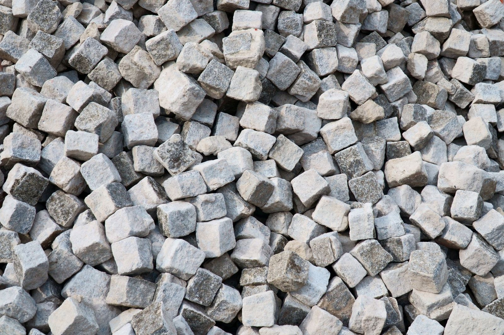

Strona głównaOferta
Kamień, kostkai ogrodzenia.
Od ścieżki przez trawnik po taras przed wejściem i ogrodzenie od ulicy. Pokaż nam teren albo zdjęcie, które Ci się podoba, a przyjedziemy, obejrzymy i podamy cenę.

Tarasyz kamienia łupanego.
Nieregularne płyty kamienia dopasowujemy jak puzzle, z równą fugą i spadkiem od ściany domu. Taki taras nie płowieje i z każdym rokiem wygląda szlachetniej.
- Płyty dopasowane ręcznie
- Równa fuga
- Spadek od ściany domu

Schodykamienne.
Stopnie z bloków granitu, okładane łupkiem albo kamieniem łupanym. Robimy wejścia do domu, zejścia do ogrodu i schody przy skarpie, z balustradą albo bez.
- Stopnie z bloków granitu
- Okładzina z łupka albo kamienia łupanego
- Schody przy skarpie

Ogrodzeniaz kamienia.
Słupki i murki z kamienia łupanego, naturalnego i szarogłazu, także pod przęsła i bramy. Wnęki na skrzynkę na listy i domofon robimy od razu przy murowaniu.
- Słupki i murki pod przęsła
- Kamień łupany i szarogłaz
- Wnęka na skrzynkę i domofon

Kostka brukowai granitowa.
Podjazdy, dojścia i opaski wokół domu z kostki betonowej albo granitowej. Najpierw porządna podbudowa i spadki, potem równa nawierzchnia.
- Podjazdy i dojścia
- Opaski wokół domu
- Podbudowa i spadki

Murki, rabatyi skarpy.
Murki oporowe, obrzeża rabat i umocnienie skarpy kamieniem. Ogród dostaje wyraźne linie, a ziemia przestaje się zsuwać po deszczu.
- Murki oporowe
- Obrzeża rabat
- Umocnienie skarpy

Ścieżkii podwórko na życzenie.
Płyty kamienne wpuszczone w trawnik, okładzina ściany, kamienna wysepka przy wejściu. Robimy to, co poprawi wygląd podwórka, według Twojego pomysłu.
- Płyty w trawniku
- Okładzina ściany
- Kamienna wysepka przy wejściu
Materiały
Z czegoukładamy.
Kamień dobieramy na miejscu, do domu i ogrodu. Z tych materiałów pracujemy najczęściej.
Kamień łupany
Nieregularne płyty na tarasy, schody i ścieżki.
Szarogłaz
Na słupki i murki ogrodzeń.
Granit
Bloki na stopnie i kostka na podjazdy.
Łupek
Okładzina stopni schodów.
Kontakt
Która usługaCię interesuje?
Powiedz, co chcesz zrobić. Przyjedziemy, obejrzymy i podamy cenę. Bez zobowiązań.